Cap. 14: A Tipografia
1.0 - Estudo básico de Tipografia.
A historia da Tipografia começa na idade média, quando existiam os monges copistas, que eram pessoas extremamente dedicadas a criar copias de livros à mão (já que naquele tempo não existia nenhum tipo de mecanismo que pudesse auxiliar na produção de livros), tendo em vista que a produção de livros naquela época demorava basicamente meses para se criar uma copia de um livro, surgiu então um personagem muito importante nessa história, que se chama Johannes Gutenberg (Considerado o pai da Imprensa), ele basicamente criou uma prensa capaz de escrever textos onde a pessoas que a manuseia posiciona as letras formando palavras até que no fim, forme o texto desejado pela pessoa, após isso, ela coloca a tinta nos moldes das letras e coloca a folha junto aos moldes das letras para que seja colocado na prensa e assim seja criado o texto.
ASSISTA AO VIDEO:
Após a grande criação da prensa de Gutenberg, a preocupação mudou, chegava a hora de se preocupar em formas em que as letras poderiam ser desenhadas, para assim facilitar a leitura do texto, e foi aí que surgiu a TIPOGRAFIA o estudo da escrita.
2.0 - Anatomia do tipo: Itens Métricos
2.0.1 - Altura X
Para começarmos a mexer com a anatomia do tipo, devemos ter em mente que a letra "X" é o ponto crucial para a criação de novas fontes, isso por quê existe uma altura chamada de altura x, toda vez que uma nova fonte vai ser criada, é desenhado o x minusculo dessa fonte para que se tenha a base da altura de todas as outras alturas das letras minusculas
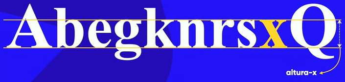Mas aí você deve estar se perguntando: "beleza, as alturas das letras minusculas são baseadas na altura da letra x, mas então porque as letras: A, B, G, K e Q estão meio que "vazando"? ". E eu respondo: "Tenha calma, todas elas têm uma explicação logo a seguir! heheh".
2.0.2 - Altura das Maiusculas
E assim como existe altura para todas as letras minusculas, existe também uma métrica para as alturas das maiusculas (Presente nas letras "A" e "Q").
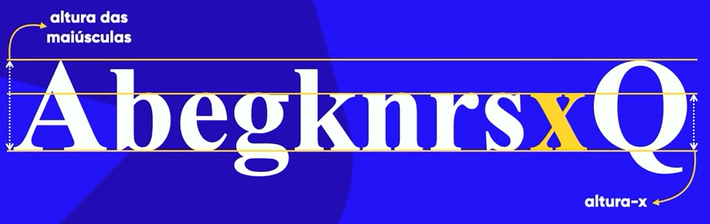2.0.3 - Ascendentes e Descendentes
Além disso, existe ainda os vazamentos nas letras, esses vazamentos são chamados de Ascendentes e Descendentes o vazamento chamado de Ascendente é aquele no qual a letra vaza para cima (Assim como as letra "B" e "K" mostradas na imagem abaixo), já o o vazamento chamado de Descendente é aquele no qual a letra vaza para baixo (Assim como as letras "G" e "Q" mostradas na imagem abaixo).
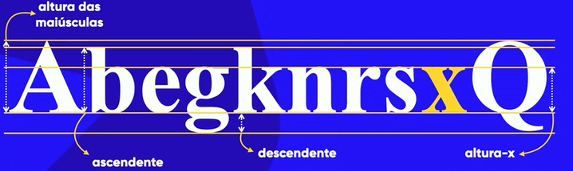2.1 - Anatomia do tipo: Anatômicos Geometrícos
A partir daqui, é necessário lembra que: Nem todos os itens que seram descritos a seguir estão presentes em todas as fontes que ja existem. Então, vamos lá.
- Serifa: Serifas são pequenas retas que se fazem presentes em algumas letras e fontes, nem todas as fontes tem serifas. Ela basicamente gera uma linha imaginaria que o nosso cerébro percebe meio que no automatico, e essa linha nos guia pelo texto facilitando a leitura do mesmo.
- Haste: A haste de uma letra é um traço principal que ela possui na vertical.
- Filete: O filete de uma letra é a parte que une duas hastes ou arcos.
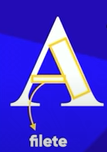
Neste caso, o filete está unindo (conectando) duas hastes.
- Arco: Uma linha curva que liga duas hastes (geralmente encontrada em letras minusculas).
- Esporão: O esporão é um recurso visual bastante interessante, ele serve como uma especie de apoio para a letra, para que ela "não caia".
- Vértice: O vértice é uma especie de pico na qual algumas letras como a "A" e a "V" atingem, ou, para ser mais claro, é quando ocorre o encontro entre duas hastes em uma letra.
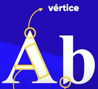
Importante salientar que nem sempre os vertices são pontiagudos, eles também podem ser redondos, oblíquos ou planos.
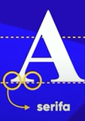 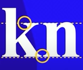
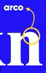
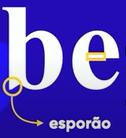
Existem também alguns componentes anatômicos de glifos (letras) que tem nomes iguais ao do corpo humano, assim como mostra a imagem abaixo:
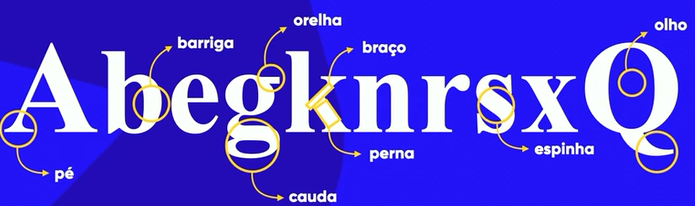3.0 - Familia Tipográfica
Algumas fontes possuem várias maneiras de representar o mesmo glifo (letra) e isso é chamado de familia tipográfica, importante ressaltar que: Nem toda fonte tem uma familia tipográfica.
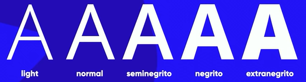4.0 - Categorias de Fontes:
- Serifadas: Fontes que possuem serifas.
- Sans-Serif (do francês "Sem Serifa"): Fontes que não possuem serifas.
- Monoespaçada: Fontes monoespaçadas possuem a mesma largura para todos os glifos (letras e símbolos), elas também podem ser ou não uma fonte serifada.
- Handwriting (do inglês "Caligrafia"): Também chamada de fonte scriptada, a fonte Handwriting simula a escrita humana.
- Comemorativa ou Display: Essa fonte não se baseia em nada em relação a anatomia do tipo, é basicamente uma fonte que se inspira em algo ou simplesmente é criada aleatóriamente.
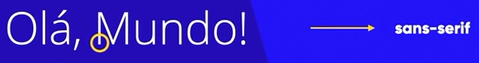
DICA: É recomendável que para textos muito longos nas quais os mesmos seram reproduzidos em tela seja usado fontes não serifadas porém, entretando, ter bastante cuidado com o espaçamento da fonte, lembre-se que o leitor deve se sentir confortável lendo seu contéudo. Já para textos reproduzidos em papel, o recomendável é utilizar fontes serifadas.
5.0 - Medidas Absolutas e Relativas:
- Medidas Absolutas: As medidas absolutas encontradas em css são: cm, mm, in (polegada), px, pt (ponto) e pc (paica). Mas existe um grande problema nessas medidas, isso por quê seu site pode ser visualizado em diferentes dispositivos com diferentes tamanhos de tela, ou seja, as medidas podem sair um tanto quanto estranhas em algum dispositivo.
- Medidas Relativas: Em medidas relativas nos temos o
- em: que é a medida relativa ao tamanho da letra "M" maiuscula da fonte.
- ex:: que é relativo a letra "x" minuscula de uma fonte (a chamada altura x).
- Vw (View width): que é relativo a largura da view port (o tamanho da tela), que é medida em porcentagem.
- Vh (View height): que é relativo a altura da view port (a altura da tela), que é medida em porcentagem.
5.1 - Trabalhando com as recomendações da W3School:
Diante de todas essas opções nas listas de medidas absolutas e relativas, a W3School recomenda apenas o uso de dois itens, que é o "px" (pixel) OU o "em". Normalmente o "font-size" (tamanho da fonte) dos textos são padronizados em 16px nos navegadores. Já essa medida em "em" é igual a um.
5.2 - Diferença entre "Px" e "Em":
Basicamente podemos criar um paralelo bem fácil de se entender entre o "Px" e o "Em", sabemos que 16px é o font-size (tamanho da fonte) padrão utilizado pelos navegadores e que esses 16px é igual a 1 em, ou seja, a cada 16px, teremos 1 em, se tivermos por exemplo, 32px, será igual a 2 em. Simples, não?
6.0 - Font-Weight,
- Font-weight: O font-weight (Peso da fonte) é capaz de criar basicamente o que nos vimos no conceito de familia tipográfica, que é representar o mesmo glifo de tamanhos diferentes, nesse comando nos poderemos optar pelos pesos literais que vão do mais leve ao mais grosso que são: lighter, normal, bold, bolder
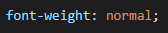
Temos também, a variação numérica, que vai de 100 a 900.
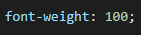
Lembrando que: Nem todas as fontes possuem todos esses pesos disponiveis. - Font-style: O font-style (Estilo da fonte) lhe da algumas possibilidades de como você pode deixar sua fonte, como em itálico ou oblíquo (que deixa seu texto basicamente um semi itálico).
- Text-decoration: Algumas pessoas gostam por exemplo, de colocar uma parte do texto sublinhado, para isso, você pode usar o Text-decoration (decoração de texto).
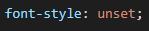
ATENÇÃO: A maioria das fontes não possuem suporte para todas essas configurações, então, caso algumas dessas configurações apresentadas não peguem, não se assuste, talvez a sua fonte não possua suporte para tal configuração.
7.0 - Simplificando tudo com o Short-Hand
É possível aplicar as configurações de font-size, weight, style e family usando apenas uma unica linha, a unica coisa que se precisa lembrar é a ordem na qual o short-hand opera, primeiramente você informa a sua configuração para Font-Style (1), logo em seguida para Font-Weight (2), Size (3) e Family (4).
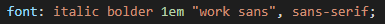 um exemplo de configurações que podem ser usadas usando a tecnica short-handATENÇÃO: É valido lembrar mais uma vez que a maioria das fontes não suportam todas as configurações aqui mostradas. Talvez peguem uma ou outra, mas dificilmente pegara todas.